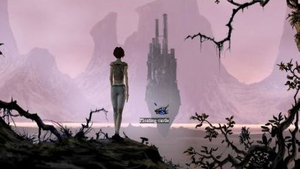
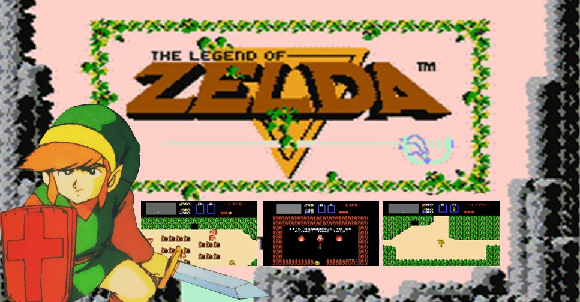

![Super Mario World game screen and a green box surrounding it; Mario in small form standing in the middle of the scene with green bushes around him and a black box with white text above in arcade style; The text: 'Welcome, Traveller, to the adventure land! Here you'll find everything you need to know about exploring vast worlds full of puzzles and stories'; The three colorful fruits are standing out. A green one to the left and two, red and purple, to the right; A black box with white text in under each fruit. From left to right: 'Definition', 'History' and 'Top 100'.](./../../images/adventure-hero.png)
|
Adventure games focus on puzzle solving within a narrative framework, generally with few or no action elements. Other popular names for this genre are “graphic adventure” or “point-and-click adventure”, but these represent only part of a much broader, diverse range of games. |
|
Adventure games are not based on what the dictionary defines as “adventure”. Some are, but many forsake danger and excitement for more relaxed, thoughtful endeavours. They are also not: role-playing games that involve extensive combat, team-building and points management; action/adventures such as Uncharted and Prince of Persia where puzzle-solving is clearly a secondary focus; pure puzzle games like Bejeweled or Tetris. |
 |
|
Of course, stories, puzzles, and exploration are not limited to just adventures. More and more games outside the genre are incorporating adventure game elements, like Scribblenauts, Braid and Limbo. Given their shared features, we will sometimes cover these as special “games of interest”, though always with the understanding that they fall outside the scope of our adventure game definition. |
|  |
Adventure games can be traced back to 1976, with the release of Colossal Cave Adventure. Developed by Will Crowther and Don Woods, this text-based game was inspired by Crowther's actual caving experiences. Throughout the 1970s and 1980s, some games continued to be text-based, but others featured simple graphics as well. Some popular titles from this era include Zork, The Hitchhiker's Guide to the Galaxy, and King's Quest. |
|
In the 2000s, a new wave of developers began to experiment, releasing innovative franchises that pushed the boundaries of what an adventure game could be. These developers were influenced by the classics, but also brought their unique vision, resulting in a new wave of originals. Although some say this era displayed little innovation and could be seen as underwhelming, many of the franchises we see today came to life during this decade. Influential games such as The Longest Journey, Lara Croft: Tomb Raider, God of War, and Uncharted became hits for their complex and emotionally charged stories, as well as their gameplay. |
|
Today, adventure games are more robust and diverse than ever before. Developers continue to release sequels to earlier hits and introduce new titles. There are now adventure games for every type of player, from those who prefer to relax with a light-hearted game to those who want to be challenged by a complex and thought-provoking story. |